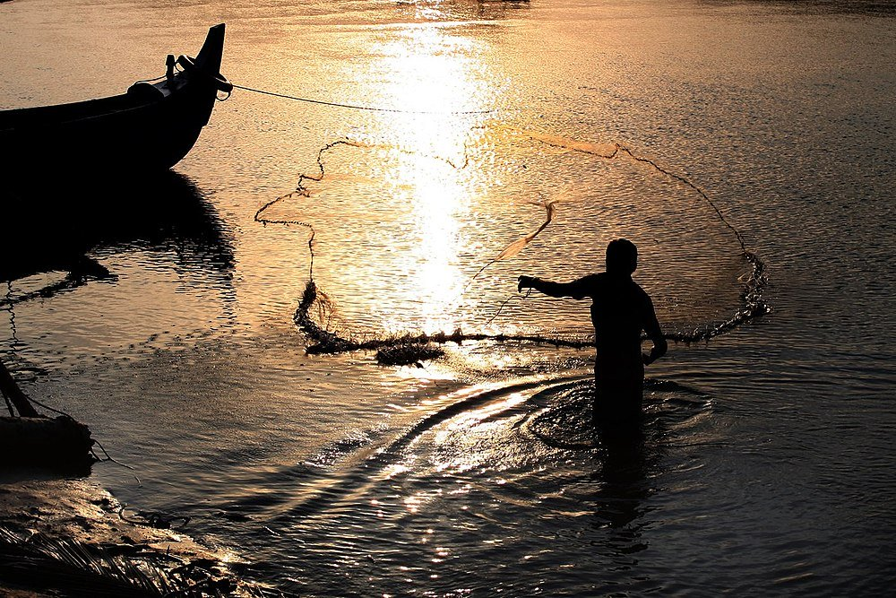
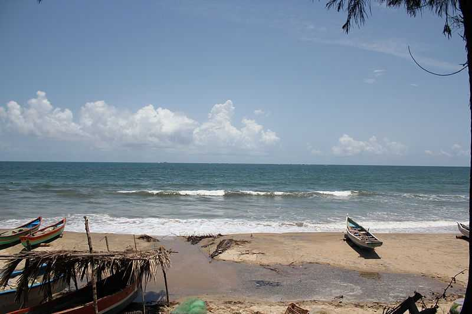
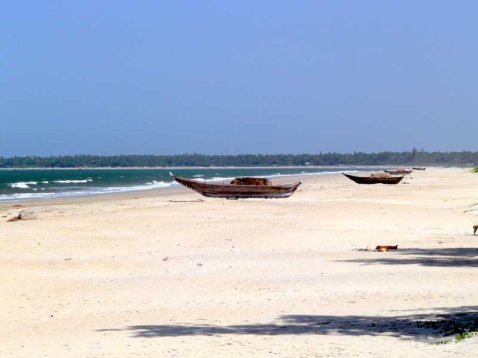

|  |  |  |
Known for its many beaches, Tarkarli is an instance of paradise for beach lovers located in Sindhudurg district of Maharashtra. Tarkarli Beach is situated almost 7 km south of Malvan, at the confluence of the Karli River and the Arabian Sea. With countless beaches such as Kolam, Tarkarli and Achra, you could spend your whole day walking and lazing around and enjoying the various adventurous sports available. One of the most alluring things about the Trakarli Beach is its pristine natural beauty, which has a unique charm of its own. The beach has powdery white sand and is one of the few stretches where you can see right through crystal clear waters for a distance of almost 20 feet. Gently swaying palm trees along the coastline lull you into a sense of tranquillity and you will want to spend all your days here. What makes the beaches truly magical are the occasional sighting of dolphins and turtles, both of which can be seen on numerous occasions throughout the day. Sunsets are especially endearing at the Tarkarli Beach and the beauty of this place is only enhanced in the diffused light of the dusk. A haven of natural serenity, Tarkarli Beach is a paradise in its own right.